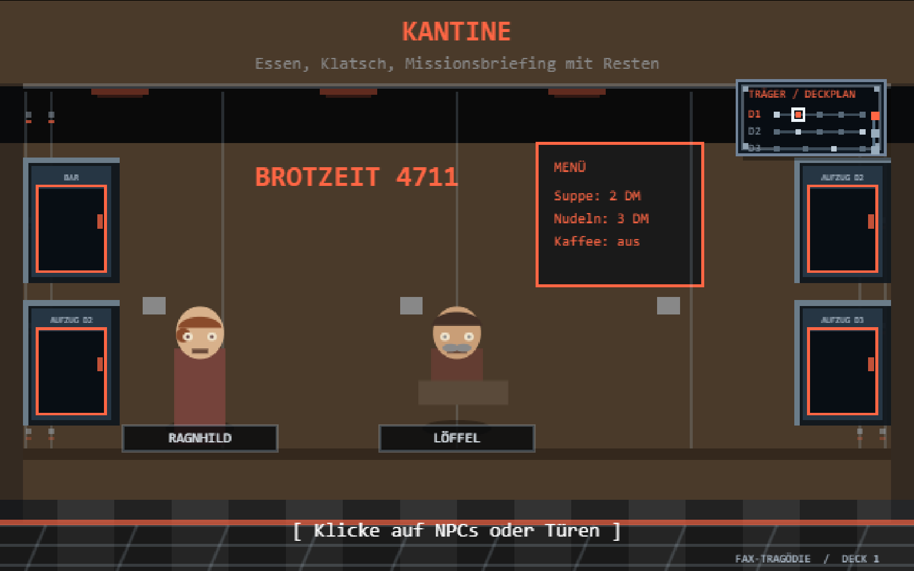
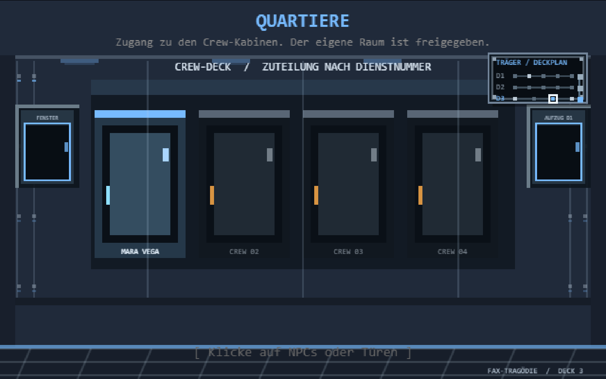
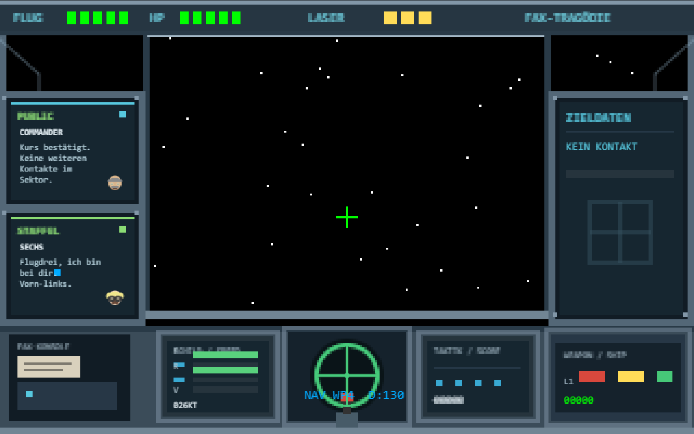

14. Oktober 2026 · Träger-Innenräume, persönliche Quartiere, Funk und Copilot-Arbeitsablauf
DER TRÄGER IST EIN SCHIFF, KEIN MENÜ
Alle 14 Innenräume behalten ihre eigenen prozeduralen Möbel und Farben. Ein gemeinsamer Satz aus Druckschott-Spanten, Paneelfugen, Nieten, Deckleuchten und metallischen Bodenplatten verbindet sie nun sichtbar zu einem Träger. Die Wege zwischen Räumen sind keine schwarzen Textschaltflächen mehr: Schmale, farbcodierte Schotts sitzen seitlich in den Bulkheads, links und rechts im Raum verteilt; Deckwechsel sind als Aufzüge markiert. Der Boden und die Crew bleiben frei.
Der Quartiergang zeigt vier private Kabinentüren. Die erste trägt den Namen des Piloten und führt in dessen Zimmer. Die übrigen bleiben abgeschlossen. Ein Klick darauf gibt einen kurzen Hinweis — Zugang verweigert, keine Berechtigung oder der eigene Gedanke, nicht einzudringen.

Die Räume teilen Spanten und Deckplatten; Raumobjekte und Crew bleiben individuell.

Das eigene Zimmer ist mit dem Namen des Spielers markiert, nicht mit einem Captain-Rang.
COCKPIT: KONTAKTE STATT PLATZHALTER
Der Sternenrenderer behandelte seine Z-Koordinaten nach der Umstellung auf eine spielerrelative Kamera weiterhin wie Weltkoordinaten. Nach längerem Vorwärtsflug lagen dadurch alle Sterne hinter dem Cockpit und das Fenster wurde schwarz. Die Projektion rechnet das relative Sternfeld jetzt passend in Weltkoordinaten um; Vorschub und Parallax bleiben erhalten.
Der Funk ist jetzt Teil des linken Schiffs-Panels und nicht mehr als Fenster über das Flugbild gelegt: Public/Flugleitung oben, Staffelfunk darunter, jeweils im eigenen eingelassenen Funkfach. Nachrichten von Sechs, Neun, Zwo, Vier und Wingman-Rufzeichen werden dem Staffelfunk zugeordnet; Commander-, System- und Autopilotmeldungen bleiben auf dem öffentlichen Kanal. Sprechende Personen erhalten ein kleines Crew-Porträt, Namen und Text passen in die schmalen Displays.
Das Instrumentenbrett folgt der Aufteilung aus der Referenz, in eigener prozeduraler Pixel-Art: links Funk und Fax, mittig getrennte Multifunktionsanzeigen mit rundem Taktik-Radar, rechts Ziel- und Waffenstatus. Das Cockpit bleibt ein Rahmen um die Flugansicht, keine moderne HUD-Fläche darüber. Ein kleines Faxgerät gehört weiterhin zur Bordausstattung.
Das Zielpanel zeigt nur lebende Gegner vor dem Spieler. Name, Distanz und verbleibende Trefferpunkte werden aus den tatsächlichen Gegnerdaten gezeichnet; ohne Kontakt steht dort ausdrücklich „KEIN KONTAKT“ statt einer erfundenen Reichweite. Treffer können jetzt Antrieb, Waffen, Schilde oder Sensoren beschädigen. Der Status wird im Cockpit angezeigt: beschädigte Waffen verursachen weniger Schaden, ein ausgefallenes Waffensystem schießt nicht mehr, schwächere Schilde laden niedriger, Sensorenausfall blendet Kontakte aus und ein beschädigter Antrieb verringert die Geschwindigkeit.

Funk und Fax links, zentrale Radar- und Statusanzeigen sowie Zielpanel rechts.
SAVEGAMES BLEIBEN AN BORD
Das persönliche Zimmer verwendet jetzt die stabile Raum-ID player_quarters. Neue Spielstände speichern diese ID. Alte Spielstände mit spinde, captain_quarters oder captains_quarters werden beim Laden im Arbeitsspeicher auf das persönliche Pilotenzimmer abgebildet. Der gespeicherte Originaltext wird nicht beim Laden überschrieben; alle anderen Savegame-Daten und die vorhandene Schema-Version bleiben erhalten.
Damit hängt der Zugriff auf das Speicherterminal am eigenen Quartier und nicht an einem Rang, den der Spieler nicht besitzt. Der Name stammt aus der Eingabe zu Spielbeginn und wird zugleich an Tür und Zimmer angezeigt.
Der Weltstand speichert Systemzustände optional und additiv. Ältere Spielstände ohne diese Daten bleiben gültig und erhalten beim Laden volle Systeme; neue Schäden bleiben über Speichern und Laden erhalten. Nach einer erfolgreichen Landung kann Bolt im Hangar mit R alle Systeme und Schilde kostenlos instandsetzen. Wer die Reparatur überspringt, nimmt die Schäden in den nächsten Einsatz mit.
COPILOT IM ENTWICKLUNGSABLAUF
Copilot wurde in VS Code als Entwicklungsassistent für den Grafik- und Integrationspass eingesetzt: vorhandene globale Abhängigkeiten und Script-Reihenfolge wurden beibehalten, Änderungen am Savegame wurden additiv und abwärtskompatibel gehalten, und die Resultate wurden sowohl im Browser als auch mit dem Projekt-Smoke-Test geprüft.
Das ist eine Entwicklungsintegration, keine neue Laufzeitabhängigkeit: Das Spiel bleibt eine statische HTML-Seite mit Canvas und Vanilla-JavaScript. Copilot, Netzwerkzugriff und zusätzliche Assets werden zum Spielen nicht benötigt. Die drei neuen Bilder auf dieser Seite sind Browser-Screenshots zur Dokumentation, keine Spielgrafiken.
Prüfung:node _smoke_test.js deckt die 14 Raumgrafiken, Quartier-Zugriff, Legacy-Save-Migration, beide Funkkanäle, persistenten Systemschaden, Reparatur und ein nach langem Flug sichtbares Sternenfeld ab.